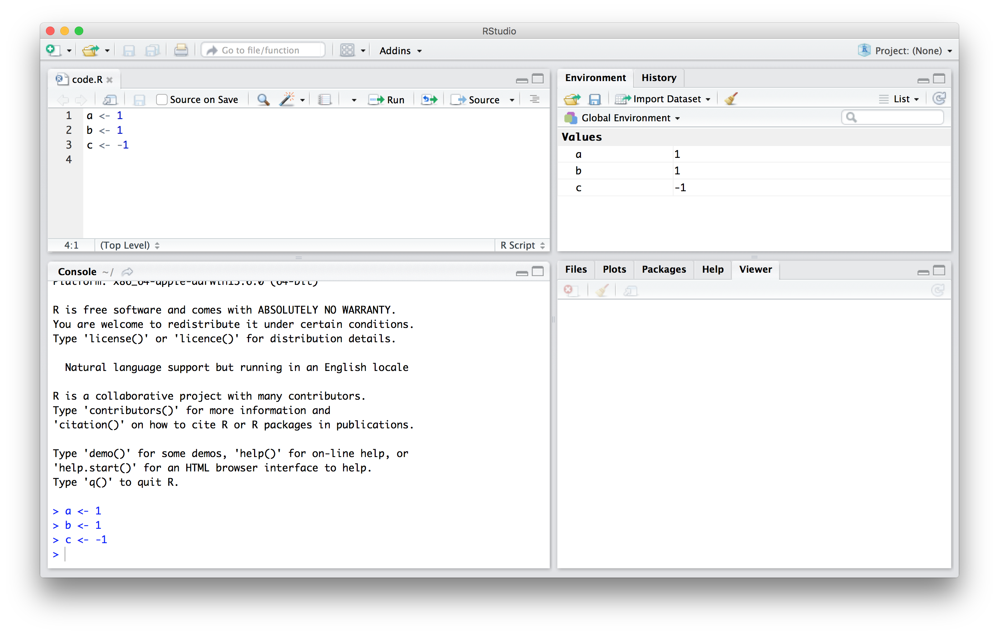

a <- 1
b <- 1
c <- -1Using R
This should be review
Pre-requisites for EC242 include PLS202, which covers the basics of using R and RStudio. Thus, we do not spend any class time on the workings of R. It is assumed you already know how to run a script, the basics of “object oriented programming” (how R names variables and data.frames, etc.), and how to put together a code file that runs an analysis.
PLS202 also teaches two important areas that we will build on rather than review: visualization with ggplot and geospatial analysis with sf.
Therefore, this resource guide contains a review of these things. If this is not review for you, then please make sure you have a working familiarity with these concepts and coding tools.
Keys to success
The course content below should be considered a prerequisite for success. For those concerned about basics of R, you absolutely must read this content and attempt the coding exercises. If you struggle to follow the content, please contact the professor or TA.
Before we get started with the motivating dataset, we need to cover the very basics of R.
Console and Script
Your Rstudio has two main areas in which code is written. The console appears at the bottom of your screen. You can interact directly with R through the console. Your script editor is at the top of your screen. This is where code that you want to save is written, usually in an order such that an entire set of commands can be written top-to-bottom and will run with the desired result. In the script editor, you can highlight lines of code and use command+enter (mac) or ctrl+enter (windows) to run just the bit of code.
In class, you’ll likely want to copy bits of code into a blank document and, at the end, save the document as notes, just for your reference. Remember, if you put something directly into the console, you won’t have a record of it. Putting it into a script will keep a version of it.

How we use Rmarkdown
Rmarkdown lets us combine the processing and output from R code with text and headers written in plain english, which lets us do something in code and then show it and discuss it in one place.
An .Rmd (Rmarkdown document) like your lab and weekly writing templates has three parts: first, a YAML header up at the top that establishes some variables for use in rendering to PDF. Second, “code chunks” that are processed by R. And third, markdown text that is processed as normal text (via markdown langugage). You do work in code chunks, the output is included in the document, and you discuss the results in-line. When you render your document using the “knit” button, R will construct the final PDF output by running code chunks in order, and merging their output with your text. Make sure you read using Rmarkdown and using markdown before you do your first weekly reading.
The header on the code chunk tells Rstudio what language to use to run the chunk (r), and can take some settings for displaying output. The one you want to know now is echo=T. When this is TRUE (the document’s default), then knitting will include a copy of your code along with the output. Don’t change this to FALSE or I can’t see your work when grading.

Your R code goes here in these “chunks”. In the upper right, you’ll see a green down-pointing triangle and a green right-pointing triangle. The first one (down-pointing) runs all of the previous code chunks up to this one while the second (right-pointing) runs this code chunk.
This is very useful when you are iterating through steps to develop your code. Running a code chunk will show you the output from that code chunk, which is what will drop into your .Rmd file when you knit it. Note that you can also highlight code and use CTRL+ENTER (or CMD+ENTER for macs) to run code.
Code Flow: Your script needs to contain all the steps you have taken to complete the assignment (or create your group project, etc.). For each assignment, you will have a single script that can run “from the top” and generate your results. You will be primarily working with an Rmarkdown file, so all your R progress, from loading packages and data to the final plot or output, will be in code chunks with your written answers in between.
It is important to get a grasp on this paradigm – all code chunks are processed in order (a “flow”), and early code chunks influence later code chunks. All work has to be in the code, and it has to be in sequential order – if you refer to an object in the 3rd code chunk from the 2nd chunk, you’ll get an error, even though your local environment may have that object in it. When you “knit” your script, it runs from a fresh, clean, empty state, and your environment is not accessible to it. Any work you do directly into the console will not apply when you run your code from the top. You can work in the console, but it’s absolutely vital that you then copy your work to a code chunk. This will be a source of frustration while you get used to the paradigm of code flow.
install.packages()
R uses packages to add functionality. Much of R is really based on additional functionality (with “Base R” being a fairly stripped-down set of functions). As such, we’ll need to install some packages. We’ll state which packages are needed at the top of every unit and assignment. You need only install a package once on your computer, and (counter-intuitive to our discussion on code flow), you should never, ever have install.packages() in your recorded code (in your “code” file if using an R script, or in your code chunks in a .Rmd). If it’s in your .Rmd file, when you “knit”, it’ll try to install the packages and will get very confused and throw an error. To install a package, you type (directly in the console) install.packages('packageName').
To use a package, you include (in your .Rmd, usually in the first code chunk) library(packageName).
Objects
Suppose a relatively math unsavvy student asks us for help solving several quadratic equations of the form \(ax^2+bx+c = 0\). You—a savvy student—recall that the quadratic formula gives us the solutions:
\[ \frac{-b + \sqrt{b^2 - 4ac}}{2a}\,\, \mbox{ and } \frac{-b - \sqrt{b^2 - 4ac}}{2a} \]
which of course depend on the values of \(a\), \(b\), and \(c\). That is, the quadratic equation represents a function with three arguments.
One advantage of programming languages is that we can define variables and write expressions with these variables, similar to how we do so in math, but obtain a numeric solution. We will write out general code for the quadratic equation below, but if we are asked to solve \(x^2 + x -1 = 0\), then we define:
which stores the values for later use. We use <- to assign values to the variables.
We can also assign values using = instead of <-, but some recommend against using = to avoid confusion.1
TRY IT
Copy and paste the code above into your console (or use the “copy code” button in the box) to define the three variables. Note that R does not print anything when we make this assignment. This means the objects were defined successfully. Had you made a mistake, you would have received an error message. Throughout these written notes, you’ll have the most success if you continue to copy code into a blank R script or into your own console.
To see the value stored in a variable, we simply ask R to evaluate a and it shows the stored value:
a[1] 1A more explicit way to ask R to show us the value stored in a is using print like this:
print(a)[1] 1By default, just running a in the console results in the assuption that you wanted to print out a.
We use the term object to describe stuff that is stored in R. Variables are examples, but objects can also be more complicated entities such as functions, which are described later.
The workspace
As we define objects in the console, we are actually changing the workspace. You can see all the variables saved in your workspace by typing:
ls()[1] "a" "b" "c" "copyFromOneDrive"
[5] "filter" In RStudio Posit, the Environment tab shows the values:

We should see a, b, and c. If you try to recover the value of a variable that is not in your workspace, you receive an error. For example, if you type x you will receive the following message: Error: object 'x' not found.
Now since these values are saved in variables, to obtain a solution to our equation, we use the quadratic formula:
(-b + sqrt(b^2 - 4*a*c) ) / ( 2*a )[1] 0.618034(-b - sqrt(b^2 - 4*a*c) ) / ( 2*a )[1] -1.618034
TRY IT
Copy and paste the code above into your console (or use the “copy code” button in the box) to define the three variables, and the code used to implement the quadratic formula. Note that R does not print anything when we make the code assignment for a, b, and c. This means the objects were defined successfully. Had you made a mistake, you would have received an error message. Put them all together and run them to see the solutions. Note that the two lines that define the solution do not assign the result to a new object; thus, they get printed in the output.
Throughout these written notes, you’ll have the most success if you continue to copy code into a blank R script or into your own console.
How we use Rmarkdown
Rmarkdown lets us combine the processing and output from R code with text and headers written in plain english, which lets us do something in code and then show it and discuss it in one place.
An .Rmd (Rmarkdown document) like your lab and weekly writing templates has three parts: first, a YAML header up at the top that establishes some variables for use in rendering to PDF. Second, “code chunks” that are processed by R. And third, markdown text that is processed as normal text (via markdown langugage). You do work in code chunks, the output is included in the document, and you discuss the results in-line. When you render your document using the “knit” button, R will construct the final PDF output by running code chunks in order, and merging their output with your text. Make sure you read using Rmarkdown and using markdown before you do your first weekly reading.
The header on the code chunk tells Rstudio what language to use to run the chunk (r), and can take some settings for displaying output. The one you want to know now is echo=T. When this is TRUE (the document’s default), then knitting will include a copy of your code along with the output. Don’t change this to FALSE or I can’t see your work when grading.
Your R code goes here in these “chunks”. In the upper right, you’ll see a green down-pointing triangle and a green right-pointing triangle. The first one (down-pointing) runs all of the previous code chunks up to this one while the second (right-pointing) runs this code chunk.
This is very useful when you are iterating through steps to develop your code. Running a code chunk will show you the output from that code chunk, which is what will drop into your .Rmd file when you knit it. Note that you can also highlight code and use CTRL+ENTER (or CMD+ENTER for macs) to run code.
Code Flow: Your script needs to contain all the steps you have taken to complete the assignment (or create your group project, etc.). For each assignment, you will have a single script that can run “from the top” and generate your results. You will be primarily working with an Rmarkdown file, so all your R progress, from loading packages and data to the final plot or output, will be in code chunks with your written answers in between.
It is important to get a grasp on this paradigm – all code chunks are processed in order (a “flow”), and early code chunks influence later code chunks. All work has to be in the code, and it has to be in sequential order – if you refer to an object in the 3rd code chunk from the 2nd chunk, you’ll get an error, even though your local environment may have that object in it.
When you “knit” your script, it runs from a fresh, clean, empty state, and your environment is not accessible to it. Any work you do directly into the console will not apply when you run your code from the top. You can work in the console, but it’s absolutely vital that you then copy your work to a code chunk. This will be a source of frustration while you get used to the paradigm of code flow.
install.packages()
R uses packages to add functionality. Much of R is really based on additional functionality (with “Base R” being a fairly stripped-down set of functions). As such, we’ll need to install some packages. We’ll state which packages are needed at the top of every unit and assignment. You need only install a package once on your computer, and (counter-intuitive to our discussion on code flow), you should never, ever have install.packages() in your recorded code (in your “code” file if using an R script, or in your code chunks in a .Rmd). If it’s in your .Rmd file, when you “knit”, it’ll try to install the packages and will get very confused and throw an error. To install a package, you type (directly in the console) install.packages('packageName').
To use a package, you include (in your .Rmd, usually in the first code chunk) library(packageName).
Functions
Once you define variables, the data analysis process can usually be described as a series of functions applied to the data. R includes several zillion predefined functions and most of the analysis pipelines we construct make extensive use of the built-in functions. But R’s power comes from its scalability. We have access to (nearly) infinite functions via install.packages and library. As we go through the course, we will carefully note new functions we bring to each problem. For now, though, we will stick to the basics.
Note that you’ve used a function already: you used the function sqrt to solve the quadratic equation above. These functions do not appear in the workspace because you did not define them, but they are available for immediate use.
In general, we need to use parentheses to evaluate a function. If you type ls, the function is not evaluated and instead R shows you the code that defines the function. If you type ls() the function is evaluated and, as seen above, we see objects in the workspace.
Unlike ls, most functions require one or more arguments. Below is an example of how we assign an object to the argument of the function log. Remember that we earlier defined a to be 1:
log(8)[1] 2.079442log(a)[1] 0You can find out what the function expects and what it does by reviewing the very useful manuals included in R. You can get help by using the help function like this:
help("log")For most functions, we can also use this shorthand:
?logThe help page will show you what arguments the function is expecting. For example, log needs x and base to run. However, some arguments are required and others are optional. You can determine which arguments are optional by noting in the help document that a default value is assigned with =. Defining these is optional.2 For example, the base of the function log defaults to base = exp(1)—that is, log evaluates the natural log by default.
If you want a quick look at the arguments without opening the help system, you can type:
args(log)function (x, base = exp(1))
NULLYou can change the default values by simply assigning another object:
log(8, base = 2)[1] 3Note that we have not been specifying the argument x as such:
log(x = 8, base = 2)[1] 3The above code works, but we can save ourselves some typing: if no argument name is used, R assumes you are entering arguments in the order shown in the help file or by args. So by not using the names, it assumes the arguments are x followed by base:
log(8,2)[1] 3If using the arguments’ names, then we can include them in whatever order we want:
log(base = 2, x = 8)[1] 3To specify arguments, we must use =, and cannot use <-.
There are some exceptions to the rule that functions need the parentheses to be evaluated. Among these, the most commonly used are the arithmetic and relational operators. For example:
2 ^ 3[1] 8You can see the arithmetic operators by typing:
help("+")or
?"+"and the relational operators by typing:
help(">")or
?">"
Tip
Never use ? in your code. The help operator, ?..., should only be used directly in the console. If you put it in your code, it’ll keep opening the help, and when you include it in an Rmarkdown document, it’ll behave strangely. Don’t do it!
Other prebuilt objects
There are several datasets that are included for users to practice and test out functions. You can see all the available datasets by typing:
data()This shows you the object name for these datasets. These datasets are objects that can be used by simply typing the name. For example, if you type:
co2R will show you Mauna Loa atmospheric \(CO^2\) concentration data.
Other prebuilt objects are mathematical quantities, such as the constant \(\pi\) and \(\infty\):
pi[1] 3.141593Inf+1[1] InfVariable names
We have used the letters a, b, and c as variable names, but variable names can be almost anything. Some basic rules in R are that variable names have to start with a letter, can’t contain spaces, and should not be variables that are predefined in R. For example, don’t name one of your variables install.packages by typing something like install.packages <- 2. Usually, R is smart enough to prevent you from doing such nonsense, but it’s important to develop good habits.
A nice convention to follow is to use meaningful words that describe what is stored, use only lower case, and use underscores as a substitute for spaces. For the quadratic equations, we could use something like this:
solution_1 <- (-b + sqrt(b^2 - 4*a*c)) / (2*a)
solution_2 <- (-b - sqrt(b^2 - 4*a*c)) / (2*a)For more advice, we highly recommend studying (Hadley Wickham’s style guide)[http://adv-r.had.co.nz/Style.html].
Saving your workspace
Values remain in the workspace until you end your session or erase them with the function rm. But workspaces also can be saved for later use. In fact, when you quit R, the program asks you if you want to save your workspace.
Please do not save your workspace this way because, as you start working on different projects, it will become harder to keep track of what is saved. You won’t remember how you got to the point you’re at, and you won’t be able to replicate it. So please do not save your workspace.
Motivating scripts
Let’s take a simple approach to this. To solve another equation such as \(3x^2 + 2x -1\), we can copy and paste the code above and then redefine the variables and recompute the solution:
a <- 3
b <- 2
c <- -1
(-b + sqrt(b^2 - 4*a*c)) / (2*a)
(-b - sqrt(b^2 - 4*a*c)) / (2*a)By creating a script with the code above, we would not need to retype everything each time (or in subsequent chunks) and, instead, simply change the variable names. Try writing the script above into an editor and notice how easy it is to change the variables and receive an answer.
The answer you get from the 4th and 5th lines will depend on the values of a, b, and c. If you were to type new numbers directly into your console: c = 5.33 then re-run the last two lines, you will get a different answer. Your R “environment” is affected by what is run from a script and by what you type in the console. It is good (and necessary) practice to write all your code in a script (or in your Rmarkdown document), and run from the script. Always. Periodically running a script fresh from the start (clearing everything out of the environment first) is a good idea as well.
Try it!
Let’s think about how the order of code (within or between code chunks) is important: What is the sum of the first 100 positive integers? The formula for the sum of integers \(1\) through \(n\) is \(n(n+1)/2\). Define \(n=100\) and then use
Rto compute the sum of \(1\) through \(100\) using the formula. What is the sum?Now use the same formula to compute the sum of the integers from 1 through 1,000.
Look at the result of typing the following code into R:
n <- 1000
x <- seq(1, n)
sum(x)Based on the result, what do you think the functions seq and sum do? You can use help.
sumcreates a list of numbers andseqadds them up.seqcreates a list of numbers andsumadds them up.seqcreates a random list andsumcomputes the sum of 1 through 1,000.sumalways returns the same number.
In math and programming, we say that we evaluate a function when we replace the argument with a given number. So if we type
sqrt(4), we evaluate thesqrtfunction. In R, you can evaluate a function inside another function. The evaluations happen from the inside out. Use one line of code to compute the log, in base 10, of the square root of 100.Which of the following will always return the numeric value stored in
x? You can try out examples and use the help system if you want.
log(10^x)log10(x^10)log(exp(x))exp(log(x, base = 2))
Commenting your code
If a line of R code starts with the symbol #, it is not evaluated. We can use this to write reminders of why we wrote particular code. For example, in the script above we could add:
## Code to compute solution to quadratic equation of the form ax^2 + bx + c
## define the variables
a <- 3
b <- 2
c <- -1
## now compute the solution
(-b + sqrt(b^2 - 4*a*c)) / (2*a)
(-b - sqrt(b^2 - 4*a*c)) / (2*a)Data types
Variables in R can be of different types. For example, we need to distinguish numbers from character strings and tables from simple lists of numbers. The function class helps us determine what type of object we have:
a <- 2
class(a)[1] "numeric"To work efficiently in R, it is important to learn the different types of variables and what we can do with these.
Data frames
Up to now, the variables we have defined are just one number. This is not very useful for storing data. The most common way of storing a dataset in R is in a data frame. Conceptually, we can think of a data frame as a table with rows representing observations and the different variables reported for each observation defining the columns. Data frames are particularly useful for datasets because we can combine different data types into one object.
A large proportion of data analysis challenges start with data stored in a data frame. For example, we stored the data for our motivating example in a data frame. You can access this dataset by loading the dslabs library and loading the murders dataset using the data function:
library(dslabs)
data(murders)To see that this is in fact a data frame, we type:
class(murders)[1] "data.frame"Installing Packages
Woah, there – data("murder") gave me an error! Well, the data, like many functions, are part of a package. Here, it’s the dslabs package. We need to install the package before we can use it’s functions or data.
To install a new package, we use install.packages('packageName') (where hopefully-obviously “packageName” is the name of the package you want to install). We type this once directly into the console, which will add the package to our computer permanently (unless you delete it). Then, to use it thereafter, we use only library(dslabs).
Note that there are quotes when using install.packages but no quotes when using library.
Examining an object
The function str is useful for finding out more about the structure of an object:
str(murders)'data.frame': 51 obs. of 5 variables:
$ state : chr "Alabama" "Alaska" "Arizona" "Arkansas" ...
$ abb : chr "AL" "AK" "AZ" "AR" ...
$ region : Factor w/ 4 levels "Northeast","South",..: 2 4 4 2 4 4 1 2 2 2 ...
$ population: num 4779736 710231 6392017 2915918 37253956 ...
$ total : num 135 19 232 93 1257 ...This tells us much more about the object. We see that the table has 51 rows (50 states plus DC) and five variables. We can show the first six lines using the function head:
head(murders) state abb region population total
1 Alabama AL South 4779736 135
2 Alaska AK West 710231 19
3 Arizona AZ West 6392017 232
4 Arkansas AR South 2915918 93
5 California CA West 37253956 1257
6 Colorado CO West 5029196 65In this dataset, each state is considered an observation and five variables are reported for each state.
Before we go any further in answering our original question about different states, let’s learn more about the components of this object.
The accessor: $
For our analysis, we will need to access the different variables represented by columns included in this data frame. To do this, we use the accessor operator $ in the following way:
murders$population [1] 4779736 710231 6392017 2915918 37253956 5029196 3574097 897934
[9] 601723 19687653 9920000 1360301 1567582 12830632 6483802 3046355
[17] 2853118 4339367 4533372 1328361 5773552 6547629 9883640 5303925
[25] 2967297 5988927 989415 1826341 2700551 1316470 8791894 2059179
[33] 19378102 9535483 672591 11536504 3751351 3831074 12702379 1052567
[41] 4625364 814180 6346105 25145561 2763885 625741 8001024 6724540
[49] 1852994 5686986 563626But how did we know to use population? Previously, by applying the function str to the object murders, we revealed the names for each of the five variables stored in this table. We can quickly access the variable names using:
names(murders)[1] "state" "abb" "region" "population" "total" It is important to know that the order of the entries in murders$population preserves the order of the rows in our data table. This will later permit us to manipulate one variable based on the results of another. For example, we will be able to order the state names by the number of murders.
Tip: R comes with a very nice auto-complete functionality that saves us the trouble of typing out all the names. Try typing murders$p then hitting the tab key on your keyboard. This functionality and many other useful auto-complete features are available when working in RStudio.
Vectors: numerics, characters, and logical
The object murders$population is not one number but several. We call these types of objects vectors. A single number is technically a vector of length 1, but in general we use the term vectors to refer to objects with several entries. The function length tells you how many entries are in the vector:
pop <- murders$population
length(pop)[1] 51This particular vector is numeric since population sizes are numbers:
class(pop)[1] "numeric"In a numeric vector, every entry must be a number.
To store character strings, vectors can also be of class character. For example, the state names are characters:
class(murders$state)[1] "character"As with numeric vectors, all entries in a character vector need to be a character.
Another important type of vectors are logical vectors. These must be either TRUE or FALSE.
z <- 3 == 2
z[1] FALSEclass(z)[1] "logical"Here the == is a relational operator asking if 3 is equal to 2. In R, if you just use one =, you actually assign a variable, but if you use two == you test for equality. Yet another reason to avoid assigning via =… it can get confusing and typos can really mess things up.
You can ask if multiple things in a vector are equal to one specific thing:
murders$total == 5 [1] FALSE FALSE FALSE FALSE FALSE FALSE FALSE FALSE FALSE FALSE FALSE FALSE
[13] FALSE FALSE FALSE FALSE FALSE FALSE FALSE FALSE FALSE FALSE FALSE FALSE
[25] FALSE FALSE FALSE FALSE FALSE TRUE FALSE FALSE FALSE FALSE FALSE FALSE
[37] FALSE FALSE FALSE FALSE FALSE FALSE FALSE FALSE FALSE FALSE FALSE FALSE
[49] FALSE FALSE TRUEThat gives you 51 answers to the question “is this value of murders$total equal to 5? The answer is a vector of logicals.
You can see the other relational operators by typing:
?ComparisonIn future sections, you will see how useful relational operators can be.
We discuss more important features of vectors after the next set of exercises.
Advanced: Mathematically, the values in pop are integers and there is an integer class in R. However, by default, numbers are assigned class numeric even when they are round integers. For example, class(1) returns numeric. You can turn them into class integer with the as.integer() function or by adding an L like this: 1L. Note the class by typing: class(1L)
Factors
In the murders dataset, we might expect the region to also be a character vector. However, it is not:
class(murders$region)[1] "factor"It is a factor. Factors are useful for storing categorical data. We can see that there are only 4 regions by using the levels function:
levels(murders$region)[1] "Northeast" "South" "North Central" "West" In the background, R stores these levels as integers and keeps a map to keep track of the labels. This is more memory efficient than storing all the characters. It is also useful for computational reasons we’ll explore later.
Note that the levels have an order that is different from the order of appearance in the factor object. The default in R is for the levels to follow alphabetical order. However, often we want the levels to follow a different order. You can specify an order through the levels argument when creating the factor with the factor function. For example, in the murders dataset regions are ordered from east to west. The function reorder lets us change the order of the levels of a factor variable based on a summary computed on a numeric vector. We will demonstrate this with a simple example, and will see more advanced ones in the Data Visualization part of the book.
Suppose we want the levels of the region by the total number of murders rather than alphabetical order. If there are values associated with each level, we can use the reorder and specify a data summary to determine the order. The following code takes the sum of the total murders in each region, and reorders the factor following these sums.
region <- murders$region
value <- murders$total
region <- reorder(region, value, FUN = sum)
levels(region)[1] "Northeast" "North Central" "West" "South" The new order is in agreement with the fact that the Northeast has the least murders and the South has the most.
Warning: Factors can be a source of confusion since sometimes they behave like characters and sometimes they do not. As a result, confusing factors and characters are a common source of bugs.
Sequences
Another useful function for creating vectors generates sequences:
seq(1, 10) [1] 1 2 3 4 5 6 7 8 9 10The first argument defines the start, and the second defines the end which is included. The default is to go up in increments of 1, but a third argument lets us tell it how much to jump by:
seq(1, 10, 2)[1] 1 3 5 7 9If we want consecutive integers, we can use the following shorthand:
1:10 [1] 1 2 3 4 5 6 7 8 9 10When we use these functions, R produces integers, not numerics, because they are typically used to index something:
class(1:10)[1] "integer"However, if we create a sequence including non-integers, the class changes:
class(seq(1, 10, 0.5))[1] "numeric"Creating Vectors
In R, the most basic objects available to store data are vectors. As we have seen, complex datasets can usually be broken down into components that are vectors. For example, in a data frame, each column is a vector. Here we learn more about this important class.
We can create vectors using the function c, which stands for concatenate. We use c to concatenate entries in the following way:
codes <- c(380, 124, 818)
codes[1] 380 124 818We can also create character vectors. We use the quotes to denote that the entries are characters rather than variable names.
country <- c("italy", "canada", "egypt")In R you can also use single quotes:
country <- c('italy', 'canada', 'egypt')But be careful not to confuse the single quote ’ with the back quote, which shares a keyboard key with ~.
By now you should know that if you type:
country <- c(italy, canada, egypt)you receive an error because the variables italy, canada, and egypt are not defined. If we do not use the quotes, R looks for variables with those names and returns an error.
Names
Sometimes it is useful to name the entries of a vector. For example, when defining a vector of country codes, we can use the names to connect the two:
codes <- c(italy = 380, canada = 124, egypt = 818)
codes italy canada egypt
380 124 818 The object codes continues to be a numeric vector:
class(codes)[1] "numeric"but with names:
names(codes)[1] "italy" "canada" "egypt" If the use of strings without quotes looks confusing, know that you can use the quotes as well:
codes <- c("italy" = 380, "canada" = 124, "egypt" = 818)
codes italy canada egypt
380 124 818 There is no difference between this function call and the previous one. This is one of the many ways in which R is quirky compared to other languages.
Subsetting
We use square brackets to access specific elements of a vector. For the vector codes we defined above, we can access the second element using:
codes[2]canada
124 You can get more than one entry by using a multi-entry vector as an index:
codes[c(1,3)]italy egypt
380 818 The sequences defined above are particularly useful if we want to access, say, the first two elements:
codes[1:2] italy canada
380 124 If the elements have names, we can also access the entries using these names. Below are two examples.
codes["canada"]canada
124 codes[c("egypt","italy")]egypt italy
818 380 Subsetting rows and columns
When we have 2 dimensions (rows and columns in a data.frame or matrix) we can subset on either or both. Since we have two dimensions, we have to have room for two subsets in the square brackets. So, we use a , and subset by [row,col]:
For the first five rows and the first two columns of murders:
murders[1:5,1:2] state abb
1 Alabama AL
2 Alaska AK
3 Arizona AZ
4 Arkansas AR
5 California CAFor the 3rd row, 4th column:
murders[3,4][1] 6392017And, we can refer to columns by the column names (if we’re working with a data.frame):
murders[1:3,'population'][1] 4779736 710231 6392017We aren’t limited to a sequence like 1:3 either. We can c() multiple rows or columns. Here, I do both:
murders[c(1,3,51), c('state','abb','population')] state abb population
1 Alabama AL 4779736
3 Arizona AZ 6392017
51 Wyoming WY 563626And if we want all the rows or all the columns, we leave the row or column index blank:
murders[10:13,] state abb region population total
10 Florida FL South 19687653 669
11 Georgia GA South 9920000 376
12 Hawaii HI West 1360301 7
13 Idaho ID West 1567582 12Footnotes
This is, without a doubt, my least favorite aspect of
R. I’d even venture to call it stupid. The logic behind this pesky<-is a total mystery to me, but there is logic to avoiding=. But, you do you.↩︎This equals sign is the reasons we assign values with
<-; then when arguments of a function are assigned values, we don’t end up with multiple equals signs. But… who cares.↩︎